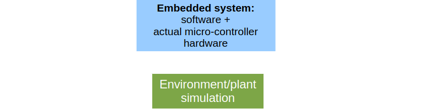

Lecture 6
Paul Fiterau
Testing
Outline
- Background
- Categories of testing
- Unit Testing
- Coverage
- System-level testing
V&V Categories
- Testing is the most common approach to V&V
- Testing is a form of
dynamic V&V - Other alternatives exist
Static V&V (next lecture)- Code inspection and reviews
Background
- Testing ideas/techniques are essential knowledge for all software developers
- Many projects spend more time on testing than implementation
- Testing is the primary method in industry to evaluate software
- Huge body of knowledge
- Many different approaches (how to construct/evaluate tests, etc.)
- => we focus on the most important/common directions
General setup
- Usual test procedure:
- Define inputs to test
- Run test
- Analyse result
- Usually performed by
test engineer - Lots of potential for automation
Levels of testing
- Unit testing
- Integration testing
- System testing
- Acceptance testing
- Orthogonal: Regression testing
Unit testing
- Test individual
software units (functions, classes, tasks, ...) - Evaluated with respect to
low-level unit design - e.g., contracts formulated for individual functions
- Should be done as early as possible
- Sometimes even before implementation =>
test-driven development - Run each time a unit is modified (as part of regression testing)
Integration testing
- Test software w.r.t.
architectural design - Focus on integration/interaction between different modules/units
- Normally done after unit testing
- E.g.,
bottom-up : gradually put units together and consider progressively larger part of system
System testing
- Assess software w.r.t.
system-level specification - E.g., Overall requirements
- Test only externally visible behavior (no internals)
Black-box approach - Usually quite late during development
Acceptance testing
- Test software w.r.t.
user requirements - Usually done by both the system provider and by customer
Unit testing
Usual setup
- Prepare: Intialize inputs
- Test: Run implementation under test (IUT)
- Analyse: Decision (oracle) wether test was successful
Test sets and test suites
Test set is a collection of test cases for a particular unitTest suite is a collection of test sets (usually for a number of units)
Example
/* Unit to test */
extern void sort(int * arr, int len);
/* Test case */
bool testSort(void)
{
/* Initialization */
int a[] = { 3, -1, 5 };
/* IUT invocation */
sort(a,3);
/* Oracle, return true if test passed */
return (a[0] <= a[1] && a[1] <= a[2]);
}
From contracts to units
/*
* PRE: len(arr) == len
* POST: arr is sorted
*/
extern void sort(int * arr, int len);
/* Test case */
bool testSort(void)
{
/* Initialization => ensure preconditions */
int a[] = { 3, -1, 5 };
sort(a,3);
/* Oracle => verify postconditions */
return (a[0] <= a[1] && a[1] <= a[2]);
}
Oracles
- Often independent of particular test case
- Sometimes derivable (mechanically) from unit specifiction
- Oracle is essential for automation
- Often in practice:
- Oracle just compares unit outputs with desired (expected) outputs
Test automation
- By using a tool we can run large collection of tests automatically
- Testing code sometimes integrated into actual code (documentation)
- Whenever we extend code we can rerun test suite (=> regression testing)
Test construction and coverage criteria
Construction of test suites
Black box (specification-based) testing- Derive tests from external descriptions
- Specifications, requirements, signatures, ...
- Without knowledge of concrete implementation
White box (implementation-based) testing- Derive tests from source code
- Branches, conditions, statements, ...
Coverage
- Usually derive test suite to achieve certain notion of
coverage - Input space coverage
- Control-flow graph coverage
- Logic coverage
- In embedded software, often required by standard
- E.g. DO-178C (avionics) requires some level of MC/DC coverage for level A certification
Input domain modelling
- Usually achieve coverage by testing different inputs
Input domain is the set of all possible inputs to a program- Usually large or even infinite
- Goal is to choose finitely many inputs that still represent complete input domain
Input space partitioning
- Partition input domain into
regions - Equivalence classes of values in domain w.r.t. some characteristic
Coverage criterion : has each region been covered by test cases?
Input space partitioning approaches
- Interface-based
- Use characteristics of datatypes
- E.g., for integers: zero, positive, negative, max/min, etc.
- Functionality-based
- Use characteristics of intended program functionality
- E.g., different expected program outputs
Exercise
Choose inputs to test determineType
typedef enum { Scalene,
Isosceles,
Equilateral,
Invalid } TriType;
TriType determineType(int length1,
int length2,
int length3) {…}
Structural coverage
Control-flow graph (CFG)
int f(int a, int b) {
int z = 0;
while(a != 0) {
if(a % 2 != 0) {
z = z + b;
}
a = a / 2;
b = b * 2;
}
return z;
}
Control-flow graph (CFG)
int f(int a, int b) {
int z = 0;
while(a != 0) {
if(a % 2 != 0) {
z = z + b;
}
a = a / 2;
b = b * 2;
}
return z;
}

Control-flow graph (CFG)
int f(int a, int b) {
int z = 0;
while(a != 0) {
if(a % 2 != 0) {
z = z + b;
}
a = a / 2;
b = b * 2;
}
return z;
}

Control-flow graph (CFG)
int f(int a, int b) {
int z = 0;
while(a != 0) {
if(a % 2 != 0) {
z = z + b;
}
a = a / 2;
b = b * 2;
}
return z;
}

Control-flow graph (CFG)
int f(int a, int b) {
int z = 0;
while(a != 0) {
if(a % 2 != 0) {
z = z + b;
}
a = a / 2;
b = b * 2;
}
return z;
}

Control-flow graph (CFG)
int f(int a, int b) {
int z = 0;
while(a != 0) {
if(a % 2 != 0) {
z = z + b;
}
a = a / 2;
b = b * 2;
}
return z;
}

Control-flow graph (CFG)
int f(int a, int b) {
int z = 0;
while(a != 0) {
if(a % 2 != 0) {
z = z + b;
}
a = a / 2;
b = b * 2;
}
return z;
}

Control-flow graph (CFG)
int f(int a, int b) {
int z = 0;
while(a != 0) {
if(a % 2 != 0) {
z = z + b;
}
a = a / 2;
b = b * 2;
}
return z;
}

Control-flow graph (CFG)
int f(int a, int b) {
int z = 0;
while(a != 0) {
if(a % 2 != 0) {
z = z + b;
}
a = a / 2;
b = b * 2;
}
return z;
}

Control-flow graph (CFG)
int f(int a, int b) {
int z = 0;
while(a != 0) {
if(a % 2 != 0) {
z = z + b;
}
a = a / 2;
b = b * 2;
}
return z;
}

Common notions in CFGs
- Components: nodes, edges which can contain guards
Execution path - Path through CFG that starts at entry point
- Exits either at (one of) the exit point(s)
- Or is infinite
Path condition - Condition for an execution path $p$ within code $c$ such that $c$ executes $p$ if path condition holds
Feasible execution path - Execution path for which a satisfiable path condition exists
Statement coverage
- A test suite achieves
statement coverage if after executing all tests every node in the CFG is executed at least once - Often quantified: e.g. 80% statement coverage
- Can this always be achieved?
Counter example
int x;
if (x > 0)
{
int y = x;
if (y < 0)
{
printf("%d\n", y);
}
}
Branch coverage
- A test suite achieves
branch coverage if after executing all tests every edge in the CFG is taken at least once - Branch coverage subsumes statement coverage
- If a test suite achieves BC it also achieves SC
Path coverage
- A test suite achieves
path coverage if after executing all tests each possible path in the CFG is executed at least once - Path coverage subsumes branch coverage
- Path coverage cannot be achieved in practice
- Number of paths is too large
- E.g. in our example we have $\approx 2^{31}$ feasible paths
- Paths might be infeasible
Decision coverage
Decision $D(p)$ in a program $p$- Set of
maximum boolean expressions in p - E.g. conditions of if, while, ...
- But also statements like $A = (B \land (x \geq 0))$
- Maximum in the sense that $(B \land (x \geq 0))$ is a decision, atoms $B$ and $(x \geq 0)$ are not
Decision coverage
- Multiple occurances of the same expression are counted as different decisions
if (x >= 0) { /* ... */ }
/* ... */
if (x >= 0) { /* ... */ }
Decision coverage
- For a given decision $d$
decision coverage is satisfied if it contains at least one test where $d$ evaluates to true and one where $d$ evaluates to false - A test suite achieves decision coverage for a program $p$ if it achieves decision coverage for every decision $d$ in $D(p)$
Example - decision coverage
- int a, b, m, n, o
- bool D
- $((a < b) \lor D) \land (m \geq n * o)$
- Inputs to achieve DC?
- Need 2 tests:
- (a = 5, b = 10, D = true, m = 1, n = 1, o = 1)
- (a = 10, b = 5, D = false, m = 1, n = 1, o = 1)
Condition coverage
Conditions $C(p)$ of a program $p$ are the set of atomic boolean expressions in $p$- E.g. in the decision $((a < b) \lor D) \land (m \geq n * o)$ the conditions are $(a < b)$, $D$, and $(m \geq n * o)$
- A test suite achieves
condition coverage if each condition $c$ in program $p$ evaluates at least once to true and once to false
Modified condition decision coverage (MC/DC)
- For a given condition $c$ in decision $d$, MC/DC is satisfied by a test suite if it contains one test where $c$ evaluates to false, one where it evaluates to true, $d$ evaluates differently in both cases, and all other conditions in $d$ evaluate identically in both
- For a given program $p$, MC/DC is satisfied by a test suite if it satisfies MC/DC for all $c$ in $C(p)$
Example - MC/DC
- int a, b, m, n, o
- bool D
- $((a < b) \lor D) \land (m \geq n * o)$
- Inputs to achieve MC/DC for $(a < b)$?
- Need 2 tests:
- (a = 5, b = 10, D = false, m = 1, n = 1, o = 1)
- (a = 10, b = 5, D = false, m = 8, n = 1, o = 1)
Exercise
Do any of the logical coverage criteria subsume each other?
- Decision coverage
- Condition coverage
- MC/DC
Regression testing
Regression testing
- Adding new features in a program or fixing a bug might introduce new bugs
Regressions are "collateral damage" of our changes- Regression testing is about preventing regressions
- Regression tests should be run after every change to the program
Regression testing
- Gain confidence that modification does not cause new bugs
- When do we write regression tests?
- After adding a new feature to check it works correctly
- After fixing a bug to check bug does not occur
- Tests are collected over time
- For bigger projects automated regression testing tools are recommended
- Related:
Continuous integration
Testing embedded systems
- ES often
reactive , needstream of test inputs - Realistic environment needed
- Either actual environment (later stage)
- Or simulation of environment (cheaper, faster)
- Common setup: hardware-in-the-loop
Hardware-in-the-loop testing
- Simulation often developed in high-level languages like Simulink, Modelica (covered in course 1DT059 Model-Based Design of Embedded Software)
- Common problems
- Simulation of environment is difficult
- What if simulation is too simplistic / not realistic?